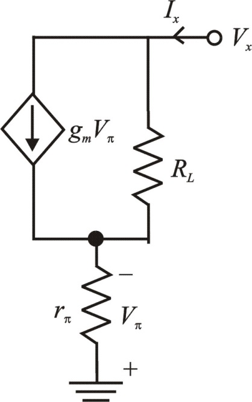

Refer to the circuit diagram of feedback trans-conductance amplifier in Figure P10.49 (a) in the textbook.
Set to determine the output resistance. Apply a test voltage  to the collector. Refer figure P10.49 (b) in the textbook.
to the collector. Refer figure P10.49 (b) in the textbook.
Replace the transistor with its hybrid model. The feedback trans-conductance amplifier with transistor replaced with its hybrid model is shown in Figure 1.

Figure 1